[1] "IXIC"Conditional Heterocedastic models
NASDAQ
IXIC.Open IXIC.High IXIC.Low IXIC.Close IXIC.Volume IXIC.Adjusted
2007-01-03 2429.72 2454.62 2394.66 2423.16 2435280000 2423.16
2007-01-04 2423.82 2460.51 2413.75 2453.43 2104210000 2453.43
2007-01-05 2445.07 2445.07 2420.59 2434.25 2060360000 2434.25
2007-01-08 2435.25 2445.63 2421.13 2438.20 1905620000 2438.20
2007-01-09 2443.26 2449.87 2423.56 2443.83 2144160000 2443.83
2007-01-10 2434.04 2461.34 2427.90 2459.33 2274210000 2459.33 IXIC.Open IXIC.High IXIC.Low IXIC.Close IXIC.Volume IXIC.Adjusted
2026-02-27 22615.43 22735.78 22538.30 22668.21 9552610000 22668.21
2026-03-02 22322.12 22802.80 22306.08 22748.86 8303030000 22748.86
2026-03-03 22292.37 22601.59 22124.78 22516.69 9705500000 22516.69
2026-03-04 22620.89 22891.88 22570.67 22807.48 10918410000 22807.48
2026-03-05 22707.47 22877.02 22500.29 22748.99 10994660000 22748.99
2026-03-06 22421.17 22614.41 22328.13 22387.68 9300220000 22387.68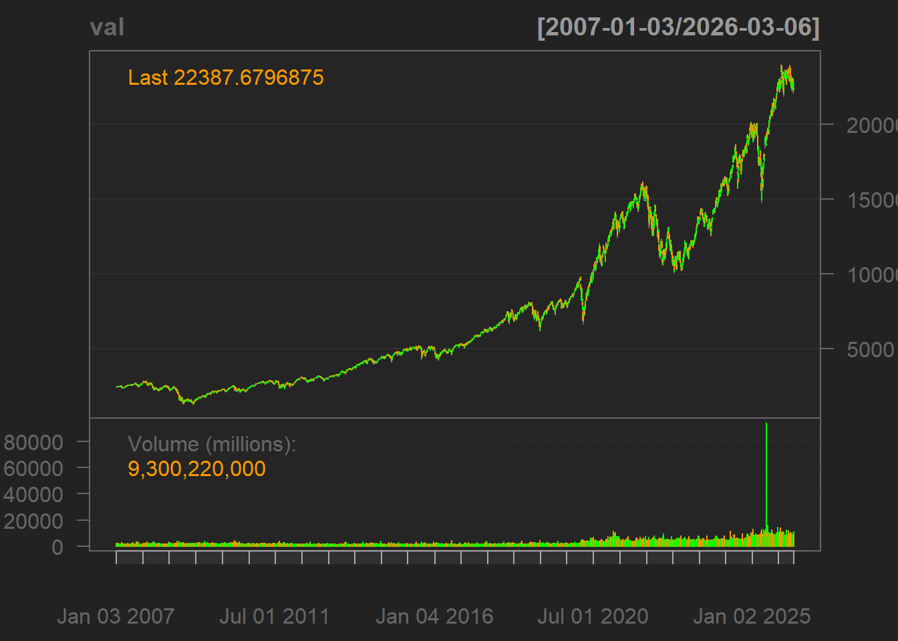
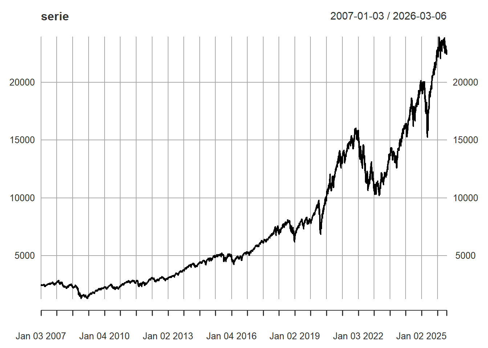
Log-Returns calculation
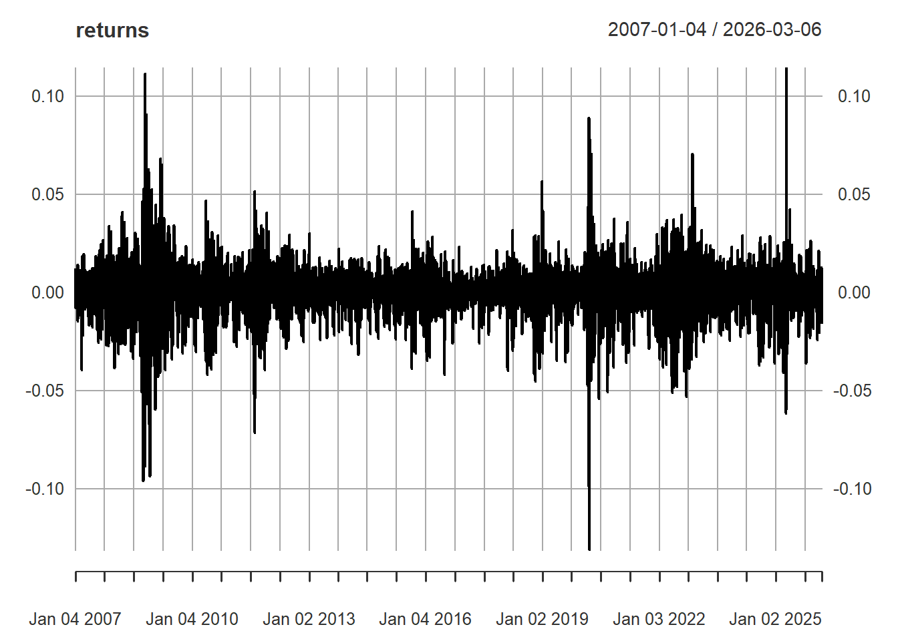
Centered Log-Returns
One Sample t-test
data: as.vector(returns)
t = 2.2694, df = 4822, p-value = 0.02329
alternative hypothesis: true mean is not equal to 0
95 percent confidence interval:
6.275836e-05 8.592563e-04
sample estimates:
mean of x
0.0004610073 Volatility Diagnose
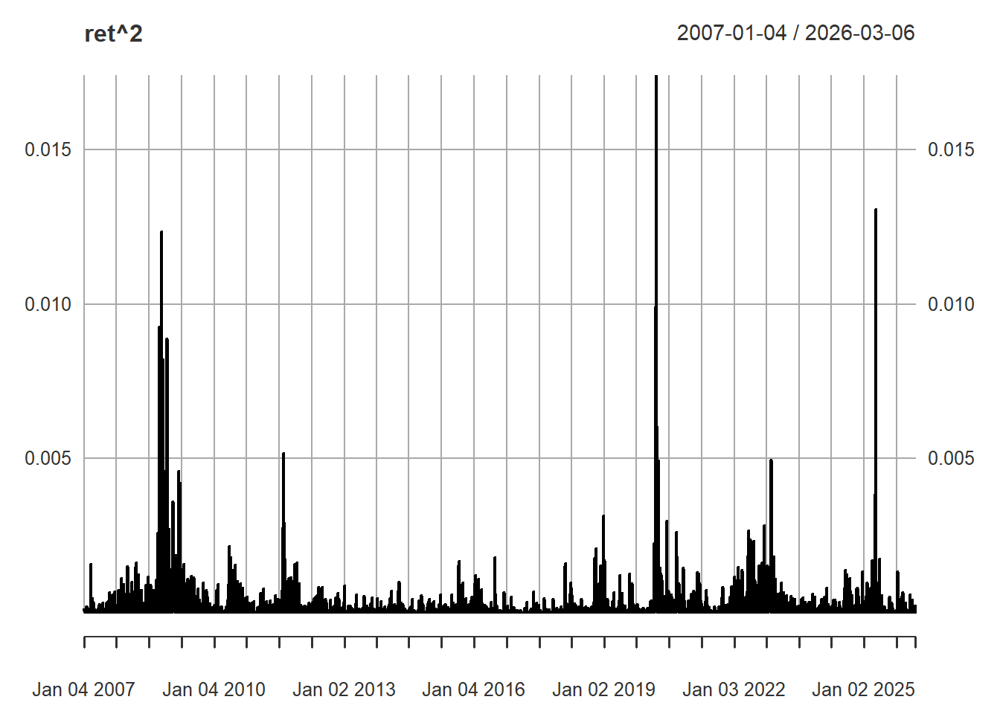
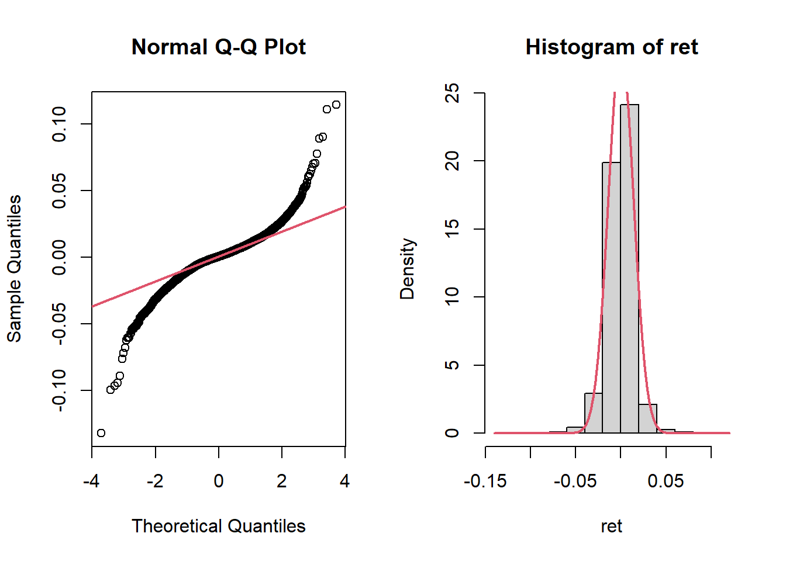
IXIC.Adjusted
nobs 4823.000000
NAs 0.000000
Minimum -0.131953
Maximum 0.114323
1. Quartile -0.005694
3. Quartile 0.006959
Mean 0.000000
Median 0.000644
Sum 0.000000
SE Mean 0.000203
LCL Mean -0.000398
UCL Mean 0.000398
Variance 0.000199
Stdev 0.014108
Skewness -0.353253
Kurtosis 7.865562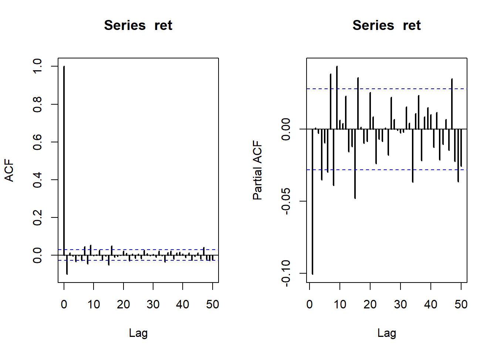
Standardized Residuals (Marginal sigma)
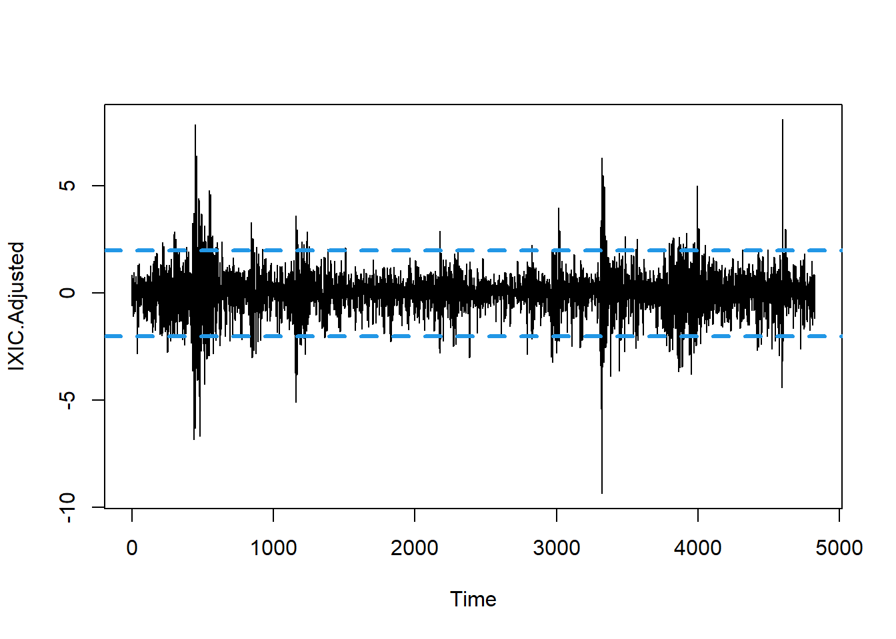
IXIC.Adjusted
nobs 4823.000000
NAs 0.000000
Minimum -9.353230
Maximum 8.103619
1. Quartile -0.403575
3. Quartile 0.493303
Mean 0.000000
Median 0.045624
Sum 0.000000
SE Mean 0.014399
LCL Mean -0.028229
UCL Mean 0.028229
Variance 1.000000
Stdev 1.000000
Skewness -0.353253
Kurtosis 7.865562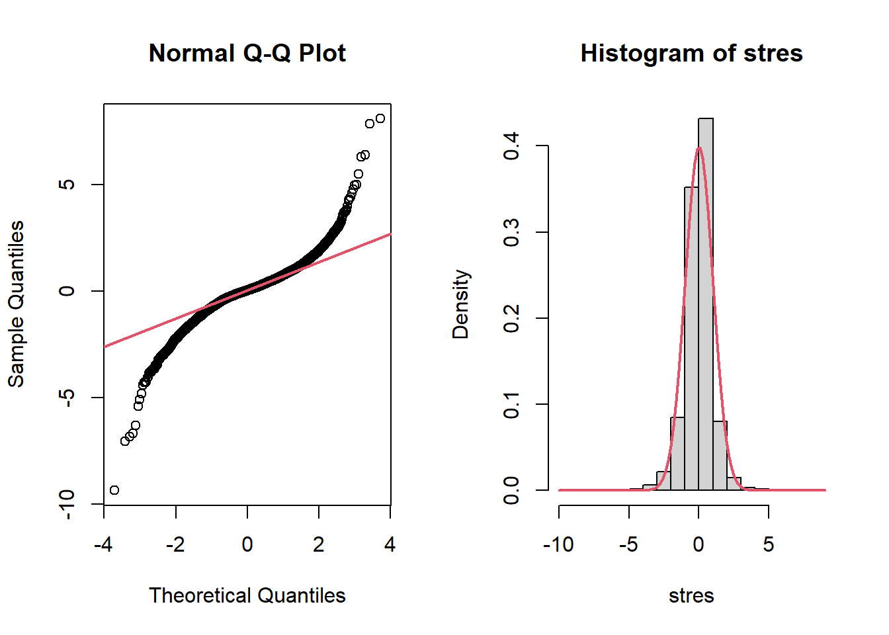
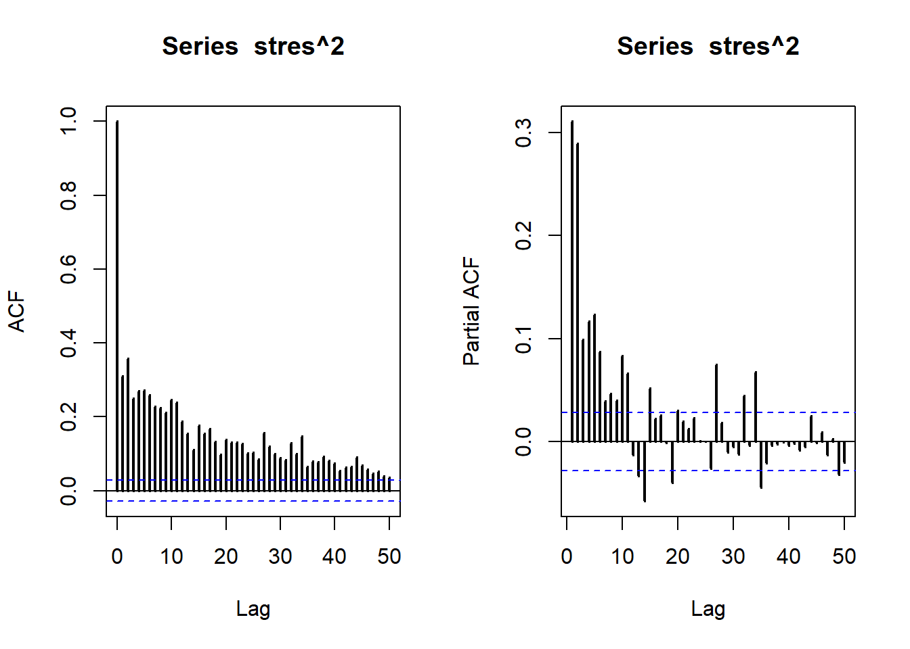
ARCH(1)
Series Initialization:
ARMA Model: arma
Formula Mean: ~ arma(0, 0)
GARCH Model: garch
Formula Variance: ~ garch(1, 0)
ARMA Order: 0 0
Max ARMA Order: 0
GARCH Order: 1 0
Max GARCH Order: 1
Maximum Order: 1
Conditional Dist: norm
h.start: 2
llh.start: 1
Length of Series: 4823
Recursion Init: mci
Series Scale: 0.0141077
Parameter Initialization:
Initial Parameters: $params
Limits of Transformations: $U, $V
Which Parameters are Fixed? $includes
Parameter Matrix:
U V params includes
mu -0.32677713 0.3267771 0.03267771 TRUE
omega 0.00000100 100.0000000 0.10000000 TRUE
alpha1 0.00000001 1.0000000 0.10000000 TRUE
gamma1 -0.99999999 1.0000000 0.10000000 FALSE
delta 0.00000000 2.0000000 2.00000000 FALSE
skew 0.10000000 10.0000000 1.00000000 FALSE
shape 1.00000000 10.0000000 4.00000000 FALSE
Index List of Parameters to be Optimized:
mu omega alpha1
1 2 3
Persistence: 0.1
--- START OF TRACE ---
Selected Algorithm: nlminb
R coded nlminb Solver:
0: 14144.110: 0.0326777 0.100000 0.100000
1: 6719.1871: 0.0326890 1.06561 0.359985
2: 6709.7860: 0.0327499 1.07186 0.309550
3: 6589.8285: 0.0328167 0.694065 0.158607
4: 6570.7865: 0.0425609 0.696393 0.435359
5: 6563.8539: 0.0556917 0.643883 0.399416
6: 6561.8897: 0.0677373 0.752390 0.265776
7: 6558.3161: 0.0546095 0.688679 0.273716
8: 6557.6746: 0.0677658 0.678832 0.331367
9: 6557.3126: 0.0544847 0.694065 0.321376
10: 6557.1755: 0.0630269 0.701133 0.291600
11: 6556.9685: 0.0599270 0.693310 0.306342
12: 6556.9677: 0.0599477 0.694015 0.305601
13: 6556.9677: 0.0599458 0.693981 0.305552
14: 6556.9677: 0.0599472 0.693982 0.305559
Final Estimate of the Negative LLH:
LLH: -13994 norm LLH: -2.901514
mu omega alpha1
0.0008457165 0.0001381214 0.3055591738
R-optimhess Difference Approximated Hessian Matrix:
mu omega alpha1
mu -31480818.95 -33259792 18723.055
omega -33259792.15 -91433540605 -5812725.362
alpha1 18723.06 -5812725 -1891.026
attr(,"time")
Time difference of 0.03871298 secs
--- END OF TRACE ---
Time to Estimate Parameters:
Time difference of 0.194694 secs
Title:
GARCH Modelling
Call:
garchFit(formula = ~garch(1, 0), data = returns)
Mean and Variance Equation:
data ~ garch(1, 0)
<environment: 0x0000028d6eec2938>
[data = returns]
Conditional Distribution:
norm
Coefficient(s):
mu omega alpha1
0.00084572 0.00013812 0.30555917
Std. Errors:
based on Hessian
Error Analysis:
Estimate Std. Error t value Pr(>|t|)
mu 8.457e-04 1.791e-04 4.723 2.33e-06 ***
omega 1.381e-04 3.694e-06 37.396 < 2e-16 ***
alpha1 3.056e-01 2.575e-02 11.865 < 2e-16 ***
---
Signif. codes: 0 '***' 0.001 '**' 0.01 '*' 0.05 '.' 0.1 ' ' 1
Log Likelihood:
13994 normalized: 2.901514
Description:
Mon Mar 9 01:29:43 2026 by user: T14
Standardised Residuals Tests:
Statistic p-Value
Jarque-Bera Test R Chi^2 7818.0443171 0.000000000
Shapiro-Wilk Test R W 0.9418132 0.000000000
Ljung-Box Test R Q(10) 27.0673109 0.002541234
Ljung-Box Test R Q(15) 34.4484241 0.002944433
Ljung-Box Test R Q(20) 38.4429767 0.007814173
Ljung-Box Test R^2 Q(10) 1018.5418358 0.000000000
Ljung-Box Test R^2 Q(15) 1247.7589634 0.000000000
Ljung-Box Test R^2 Q(20) 1475.4718787 0.000000000
LM Arch Test R TR^2 695.3293015 0.000000000
Information Criterion Statistics:
AIC BIC SIC HQIC
-5.801784 -5.797753 -5.801785 -5.800369 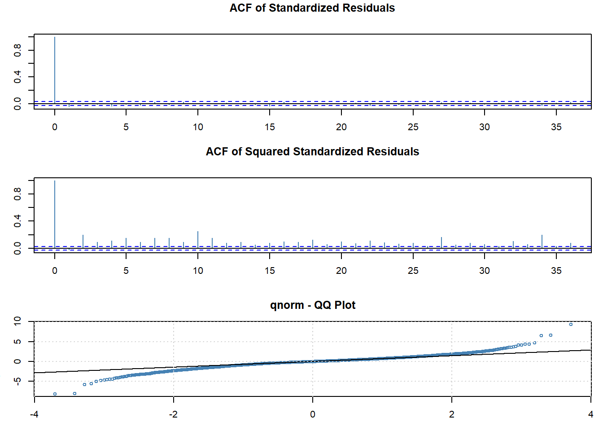
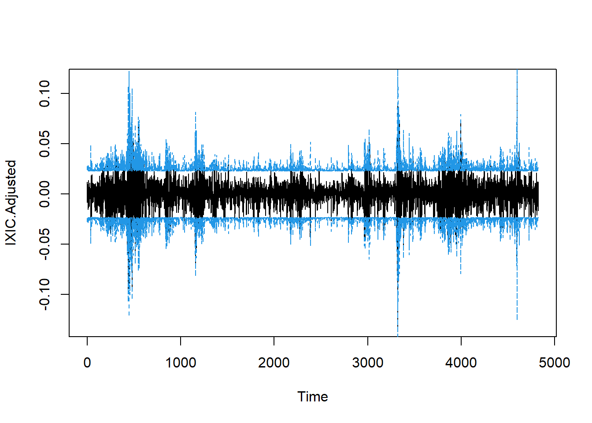
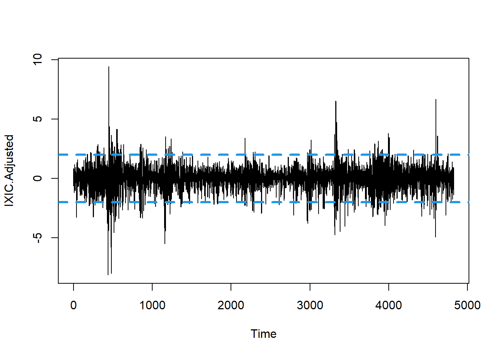
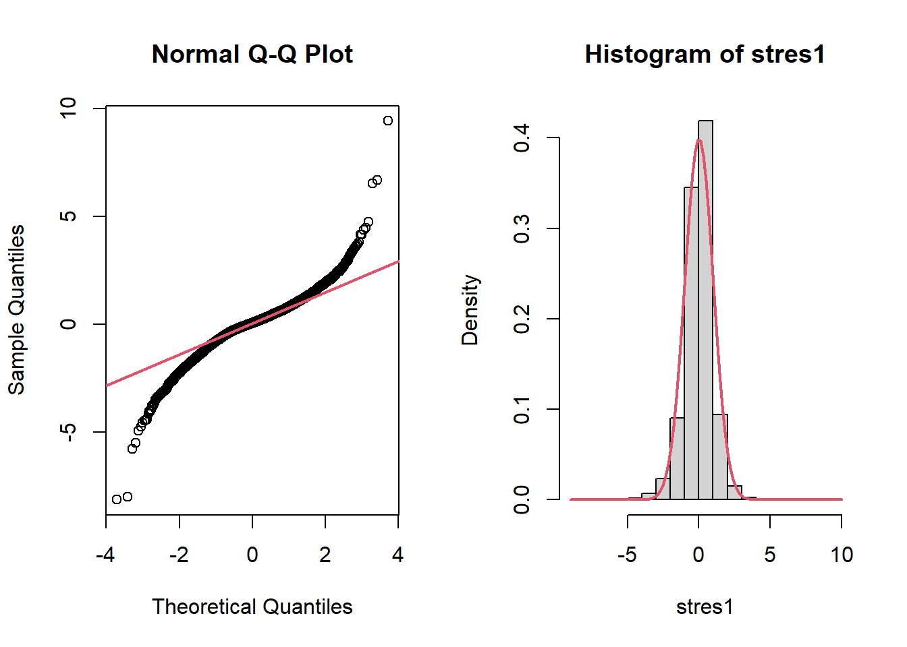
IXIC.Adjusted
nobs 4823.000000
NAs 0.000000
Minimum -8.148691
Maximum 9.421718
1. Quartile -0.438061
3. Quartile 0.535177
Mean 0.000597
Median 0.048830
Sum 2.878096
SE Mean 0.014395
LCL Mean -0.027624
UCL Mean 0.028817
Variance 0.999400
Stdev 0.999700
Skewness -0.353923
Kurtosis 6.189442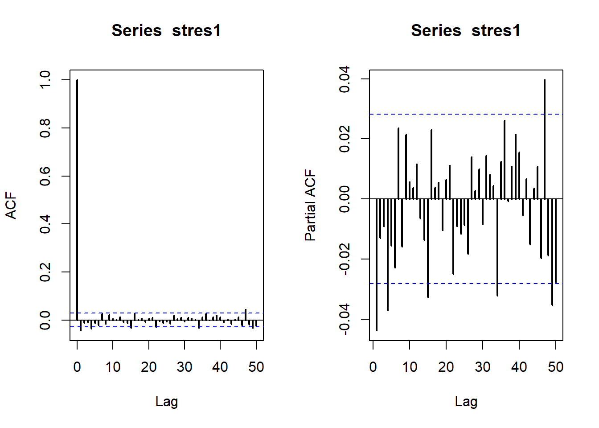
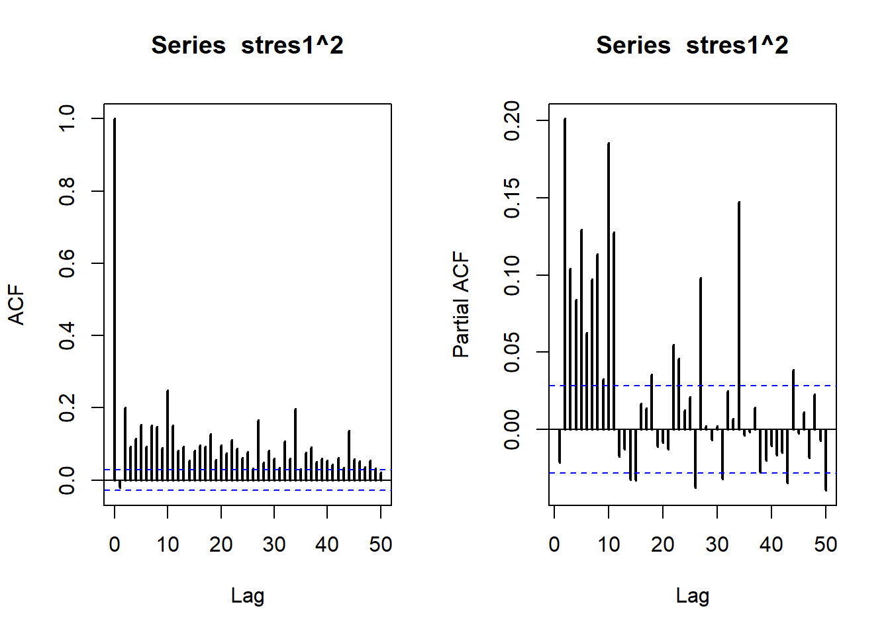
ARCH(6)
Series Initialization:
ARMA Model: arma
Formula Mean: ~ arma(0, 0)
GARCH Model: garch
Formula Variance: ~ garch(6, 0)
ARMA Order: 0 0
Max ARMA Order: 0
GARCH Order: 6 0
Max GARCH Order: 6
Maximum Order: 6
Conditional Dist: norm
h.start: 7
llh.start: 1
Length of Series: 4823
Recursion Init: mci
Series Scale: 0.0141077
Parameter Initialization:
Initial Parameters: $params
Limits of Transformations: $U, $V
Which Parameters are Fixed? $includes
Parameter Matrix:
U V params includes
mu -0.32677713 0.3267771 0.03267771 TRUE
omega 0.00000100 100.0000000 0.10000000 TRUE
alpha1 0.00000001 1.0000000 0.01666667 TRUE
alpha2 0.00000001 1.0000000 0.01666667 TRUE
alpha3 0.00000001 1.0000000 0.01666667 TRUE
alpha4 0.00000001 1.0000000 0.01666667 TRUE
alpha5 0.00000001 1.0000000 0.01666667 TRUE
alpha6 0.00000001 1.0000000 0.01666667 TRUE
gamma1 -0.99999999 1.0000000 0.10000000 FALSE
gamma2 -0.99999999 1.0000000 0.10000000 FALSE
gamma3 -0.99999999 1.0000000 0.10000000 FALSE
gamma4 -0.99999999 1.0000000 0.10000000 FALSE
gamma5 -0.99999999 1.0000000 0.10000000 FALSE
gamma6 -0.99999999 1.0000000 0.10000000 FALSE
delta 0.00000000 2.0000000 2.00000000 FALSE
skew 0.10000000 10.0000000 1.00000000 FALSE
shape 1.00000000 10.0000000 4.00000000 FALSE
Index List of Parameters to be Optimized:
mu omega alpha1 alpha2 alpha3 alpha4 alpha5 alpha6
1 2 3 4 5 6 7 8
Persistence: 0.1
--- START OF TRACE ---
Selected Algorithm: nlminb
R coded nlminb Solver:
0: 10287.334: 0.0326777 0.100000 0.0166667 0.0166667 0.0166667 0.0166667 0.0166667 0.0166667
1: 6848.4918: 0.0326847 0.553893 0.330754 0.391837 0.378133 0.397215 0.389574 0.390889
2: 6620.3022: 0.0330976 0.111626 0.312295 0.498368 0.463132 0.513689 0.490303 0.498653
3: 6419.6095: 0.0339075 1.00000e-06 0.0494850 0.463487 0.281917 0.388743 0.356383 0.273189
4: 6190.1989: 0.0194971 0.188915 0.0316458 0.458612 0.251285 0.323009 0.287160 0.277835
5: 6068.6406: 0.00472612 0.138448 1.00000e-08 0.395832 0.197304 0.220584 0.181163 0.270788
6: 6009.0642: 0.0104861 0.151919 0.292824 0.0857737 0.160646 0.0937018 0.0902166 0.229263
7: 5988.4118: 0.0105326 0.199344 0.274335 0.108585 0.165228 0.113940 0.111845 0.222413
8: 5971.4791: 0.0106081 0.174039 0.229119 0.101768 0.146089 0.106963 0.104945 0.193098
9: 5959.8820: 0.0109767 0.213897 0.201349 0.119724 0.153847 0.129342 0.128325 0.181201
10: 5948.6584: 0.0118094 0.181898 0.162131 0.105247 0.148754 0.127650 0.125876 0.156647
11: 5941.6016: 0.0108895 0.216007 0.129099 0.126775 0.164296 0.129017 0.122516 0.173776
12: 5937.4741: 0.0125026 0.193191 0.103482 0.123072 0.148323 0.130323 0.126991 0.161347
13: 5934.6798: 0.0143091 0.210620 0.107514 0.130097 0.150653 0.146283 0.143920 0.152065
14: 5933.9988: 0.0157202 0.208500 0.104487 0.150583 0.152754 0.129367 0.115472 0.126361
15: 5931.5812: 0.0175387 0.220395 0.0912444 0.146755 0.152288 0.140388 0.131829 0.141885
16: 5930.8598: 0.0194753 0.205032 0.0800113 0.136508 0.144415 0.140574 0.133703 0.138162
17: 5929.3042: 0.0215043 0.212061 0.0854292 0.140085 0.146618 0.147007 0.141135 0.141380
18: 5928.3476: 0.0235340 0.211578 0.0801126 0.138973 0.142322 0.137623 0.134314 0.145574
19: 5927.5149: 0.0255791 0.216821 0.0838112 0.138533 0.147885 0.144447 0.136684 0.141386
20: 5926.9572: 0.0276382 0.210468 0.0831584 0.136676 0.146452 0.145832 0.136880 0.135082
21: 5926.3406: 0.0296936 0.213144 0.0865443 0.143267 0.144086 0.145408 0.140634 0.139610
22: 5925.7923: 0.0316609 0.211856 0.0774679 0.135811 0.152272 0.143167 0.127538 0.146747
23: 5925.0566: 0.0335579 0.222719 0.0858152 0.130563 0.144974 0.133715 0.142406 0.136280
24: 5924.5943: 0.0355538 0.214425 0.0853100 0.134665 0.134334 0.142857 0.135944 0.134408
25: 5924.2613: 0.0375821 0.218434 0.0884051 0.140277 0.143611 0.150368 0.137508 0.136427
26: 5923.9589: 0.0395713 0.207805 0.0838077 0.142063 0.152719 0.139999 0.141783 0.133785
27: 5923.2673: 0.0398991 0.219522 0.0860798 0.138786 0.139944 0.140532 0.136312 0.138120
28: 5923.2388: 0.0399302 0.217683 0.0826622 0.137162 0.139295 0.139022 0.133874 0.136857
29: 5923.1505: 0.0400704 0.220159 0.0832641 0.137753 0.140479 0.140190 0.134376 0.137611
30: 5923.1113: 0.0402353 0.219581 0.0820169 0.137172 0.140428 0.139885 0.133416 0.137237
31: 5923.0711: 0.0404045 0.220660 0.0823224 0.137523 0.140907 0.140373 0.133650 0.137622
32: 5922.4523: 0.0465490 0.213120 0.0896255 0.137610 0.136185 0.149537 0.139672 0.133946
33: 5921.9874: 0.0486930 0.221690 0.0839331 0.145322 0.144375 0.131509 0.137950 0.137459
34: 5921.8310: 0.0487054 0.218293 0.0818530 0.142597 0.142439 0.132274 0.135251 0.136172
35: 5921.7504: 0.0487170 0.221653 0.0824132 0.141114 0.144294 0.136270 0.133647 0.137062
36: 5921.7045: 0.0488790 0.219315 0.0813378 0.139468 0.143833 0.136529 0.132114 0.136656
37: 5921.6653: 0.0490666 0.220143 0.0821978 0.139966 0.143807 0.137267 0.132841 0.137645
38: 5921.6380: 0.0492542 0.219324 0.0819976 0.139131 0.142504 0.137775 0.132321 0.137278
39: 5921.6096: 0.0494472 0.220069 0.0826652 0.139388 0.143083 0.138260 0.132721 0.137382
40: 5921.5864: 0.0496418 0.219510 0.0822596 0.138888 0.142562 0.138421 0.132361 0.137058
41: 5921.5153: 0.0506558 0.217817 0.0837029 0.140588 0.144603 0.137811 0.133934 0.137739
42: 5921.4540: 0.0510967 0.222226 0.0828993 0.136189 0.143844 0.138908 0.130253 0.135411
43: 5921.4226: 0.0511289 0.219846 0.0819532 0.138149 0.141792 0.139669 0.131766 0.137128
44: 5921.4174: 0.0511382 0.220762 0.0823438 0.138476 0.141914 0.139871 0.132066 0.137414
45: 5921.4128: 0.0511717 0.220425 0.0823257 0.138395 0.141599 0.139599 0.131879 0.137262
46: 5921.4099: 0.0512062 0.220884 0.0824450 0.138538 0.141554 0.139641 0.132055 0.137393
47: 5921.4056: 0.0512416 0.220505 0.0822926 0.138382 0.141519 0.139504 0.131973 0.137269
48: 5921.4026: 0.0512774 0.220867 0.0824088 0.138547 0.141548 0.139613 0.132072 0.137376
49: 5921.3986: 0.0513132 0.220496 0.0823027 0.138462 0.141538 0.139502 0.131928 0.137241
50: 5921.3956: 0.0513490 0.220867 0.0824085 0.138573 0.141554 0.139606 0.132063 0.137365
51: 5921.3915: 0.0513848 0.220504 0.0822852 0.138436 0.141538 0.139489 0.131965 0.137251
52: 5921.3885: 0.0514207 0.220865 0.0824163 0.138578 0.141550 0.139601 0.132061 0.137363
53: 5921.3845: 0.0514566 0.220500 0.0823124 0.138477 0.141536 0.139490 0.131929 0.137238
54: 5921.3816: 0.0514925 0.220867 0.0824190 0.138586 0.141548 0.139600 0.132059 0.137359
55: 5921.3776: 0.0515284 0.220506 0.0823013 0.138455 0.141536 0.139486 0.131956 0.137244
56: 5921.3747: 0.0515643 0.220867 0.0824289 0.138593 0.141543 0.139600 0.132053 0.137354
57: 5921.3707: 0.0516002 0.220503 0.0823256 0.138489 0.141533 0.139490 0.131925 0.137231
58: 5921.3678: 0.0516361 0.220870 0.0824307 0.138598 0.141539 0.139600 0.132053 0.137350
59: 5921.3638: 0.0516721 0.220509 0.0823166 0.138470 0.141532 0.139488 0.131949 0.137236
60: 5921.3610: 0.0517080 0.220870 0.0824413 0.138607 0.141533 0.139601 0.132045 0.137345
61: 5921.3570: 0.0517440 0.220507 0.0823397 0.138503 0.141527 0.139492 0.131920 0.137223
62: 5921.3542: 0.0517799 0.220874 0.0824421 0.138610 0.141528 0.139601 0.132047 0.137342
63: 5921.3503: 0.0518159 0.220514 0.0823307 0.138483 0.141525 0.139490 0.131943 0.137228
64: 5921.3475: 0.0518518 0.220875 0.0824536 0.138621 0.141521 0.139602 0.132037 0.137336
65: 5921.3436: 0.0518878 0.220512 0.0823544 0.138518 0.141520 0.139494 0.131913 0.137215
66: 5921.3408: 0.0519237 0.220880 0.0824530 0.138622 0.141515 0.139603 0.132041 0.137333
67: 5921.3369: 0.0519597 0.220519 0.0823437 0.138496 0.141518 0.139493 0.131939 0.137220
68: 5921.3342: 0.0519957 0.220880 0.0824660 0.138636 0.141508 0.139604 0.132029 0.137326
69: 5921.3303: 0.0520317 0.220516 0.0823695 0.138534 0.141513 0.139497 0.131905 0.137205
70: 5921.3276: 0.0520676 0.220885 0.0824633 0.138634 0.141502 0.139605 0.132036 0.137324
71: 5921.3238: 0.0521036 0.220525 0.0823555 0.138507 0.141510 0.139495 0.131937 0.137213
72: 5921.3211: 0.0521396 0.220885 0.0824787 0.138651 0.141494 0.139606 0.132020 0.137316
73: 5921.3173: 0.0521756 0.220520 0.0823855 0.138553 0.141504 0.139501 0.131895 0.137195
74: 5921.3146: 0.0522115 0.220891 0.0824728 0.138646 0.141489 0.139606 0.132031 0.137315
75: 5921.3108: 0.0522476 0.220530 0.0823657 0.138515 0.141502 0.139498 0.131936 0.137206
76: 5921.3082: 0.0522835 0.220887 0.0824924 0.138666 0.141482 0.139608 0.132010 0.137306
77: 5921.3044: 0.0523196 0.220523 0.0824030 0.138573 0.141497 0.139504 0.131882 0.137184
78: 5921.3018: 0.0523555 0.220893 0.0824815 0.138654 0.141480 0.139607 0.132028 0.137307
79: 5921.2981: 0.0523916 0.220534 0.0823742 0.138520 0.141495 0.139499 0.131939 0.137200
80: 5921.2955: 0.0524276 0.220883 0.0825085 0.138682 0.141476 0.139609 0.131997 0.137294
81: 5921.2918: 0.0524637 0.220522 0.0824229 0.138595 0.141492 0.139506 0.131865 0.137172
82: 5921.2892: 0.0524997 0.220886 0.0824891 0.138657 0.141480 0.139606 0.132027 0.137298
83: 5921.2855: 0.0525358 0.220534 0.0823813 0.138518 0.141493 0.139497 0.131943 0.137197
84: 5921.2829: 0.0525720 0.220865 0.0825297 0.138700 0.141483 0.139607 0.131975 0.137279
85: 5921.2794: 0.0526082 0.220514 0.0824448 0.138617 0.141493 0.139506 0.131843 0.137160
86: 5921.2767: 0.0526443 0.220861 0.0824943 0.138644 0.141500 0.139598 0.132031 0.137293
87: 5921.2732: 0.0526806 0.220524 0.0823907 0.138511 0.141497 0.139490 0.131942 0.137197
88: 5921.2705: 0.0527169 0.220820 0.0825599 0.138723 0.141511 0.139599 0.131937 0.137259
89: 5921.2671: 0.0527534 0.220496 0.0824610 0.138622 0.141500 0.139497 0.131828 0.137156
90: 5921.2643: 0.0527896 0.220817 0.0824959 0.138607 0.141536 0.139582 0.132045 0.137295
91: 5921.2610: 0.0528262 0.220506 0.0824149 0.138524 0.141497 0.139480 0.131915 0.137192
92: 5921.2582: 0.0528625 0.220774 0.0825937 0.138753 0.141537 0.139589 0.131889 0.137240
93: 5921.2549: 0.0528993 0.220492 0.0824562 0.138595 0.141501 0.139485 0.131847 0.137164
94: 5921.2522: 0.0529357 0.220800 0.0825080 0.138593 0.141545 0.139570 0.132048 0.137297
95: 5921.2489: 0.0529723 0.220504 0.0824610 0.138581 0.141491 0.139481 0.131862 0.137174
96: 5921.2462: 0.0530089 0.220794 0.0825977 0.138756 0.141523 0.139590 0.131899 0.137242
97: 5921.2429: 0.0530455 0.220517 0.0824482 0.138566 0.141501 0.139486 0.131895 0.137174
98: 5921.2403: 0.0530821 0.220837 0.0825446 0.138663 0.141499 0.139585 0.132002 0.137276
99: 5921.2370: 0.0531186 0.220520 0.0824960 0.138645 0.141478 0.139497 0.131823 0.137148
100: 5921.2344: 0.0531552 0.220842 0.0825662 0.138726 0.141483 0.139597 0.131956 0.137247
101: 5921.2311: 0.0531918 0.220535 0.0824431 0.138561 0.141483 0.139494 0.131920 0.137166
102: 5921.2286: 0.0532284 0.220835 0.0825811 0.138728 0.141475 0.139596 0.131947 0.137243
103: 5921.2253: 0.0532650 0.220517 0.0825134 0.138675 0.141467 0.139504 0.131799 0.137130
104: 5921.2227: 0.0533016 0.220821 0.0825571 0.138694 0.141495 0.139591 0.131982 0.137244
105: 5921.2195: 0.0533384 0.220526 0.0824532 0.138558 0.141474 0.139488 0.131915 0.137163
106: 5921.2169: 0.0533751 0.220784 0.0826149 0.138759 0.141498 0.139588 0.131896 0.137218
107: 5921.2138: 0.0534121 0.220501 0.0825207 0.138674 0.141463 0.139494 0.131787 0.137125
108: 5921.2112: 0.0534488 0.220776 0.0825577 0.138655 0.141520 0.139571 0.131994 0.137245
109: 5921.1741: 0.0543894 0.218744 0.0840383 0.138463 0.145129 0.139292 0.131879 0.137411
110: 5921.1068: 0.0553134 0.221294 0.0822512 0.137525 0.139593 0.137983 0.130276 0.139190
111: 5921.0627: 0.0562432 0.221881 0.0843256 0.140701 0.138568 0.138242 0.131796 0.134693
112: 5921.0112: 0.0571665 0.219682 0.0807602 0.138814 0.142518 0.140576 0.133005 0.137182
113: 5921.0095: 0.0571768 0.221738 0.0830200 0.139178 0.141889 0.140045 0.132274 0.137220
114: 5920.9928: 0.0571798 0.220575 0.0825246 0.138769 0.141358 0.139587 0.131780 0.136790
115: 5920.9659: 0.0583087 0.219492 0.0837080 0.139290 0.142402 0.139345 0.130861 0.138814
116: 5920.9447: 0.0594269 0.221519 0.0824349 0.137718 0.141042 0.138398 0.134181 0.135743
117: 5920.9289: 0.0596084 0.220667 0.0823020 0.140153 0.141024 0.140330 0.130641 0.136303
118: 5920.9268: 0.0598357 0.220268 0.0839079 0.139697 0.141418 0.140022 0.131553 0.137604
119: 5920.9191: 0.0600728 0.220311 0.0830425 0.139559 0.141476 0.139660 0.131444 0.136860
120: 5920.9185: 0.0600745 0.220694 0.0831206 0.139496 0.141352 0.139660 0.131507 0.136835
121: 5920.9182: 0.0600849 0.220586 0.0830188 0.139384 0.141211 0.139575 0.131450 0.136727
122: 5920.9179: 0.0600978 0.220721 0.0830507 0.139400 0.141210 0.139606 0.131501 0.136740
123: 5920.9177: 0.0601109 0.220700 0.0830167 0.139335 0.141112 0.139575 0.131492 0.136692
124: 5920.9176: 0.0601244 0.220772 0.0830366 0.139350 0.141118 0.139598 0.131525 0.136704
125: 5920.9158: 0.0604960 0.220725 0.0824859 0.139631 0.141608 0.139591 0.131644 0.136371
126: 5920.9127: 0.0608670 0.220538 0.0832823 0.139481 0.141146 0.139658 0.131564 0.136852
127: 5920.9121: 0.0610447 0.220776 0.0833472 0.139446 0.141075 0.139498 0.131319 0.136565
128: 5920.9120: 0.0612223 0.220767 0.0831158 0.139461 0.140717 0.139668 0.131599 0.136582
129: 5920.9119: 0.0612304 0.220790 0.0831272 0.139294 0.140903 0.139676 0.131536 0.136666
130: 5920.9119: 0.0612187 0.220824 0.0831685 0.139334 0.140922 0.139651 0.131522 0.136666
131: 5920.9119: 0.0612067 0.220807 0.0831711 0.139346 0.140929 0.139629 0.131505 0.136658
132: 5920.9119: 0.0611947 0.220806 0.0831736 0.139350 0.140929 0.139624 0.131499 0.136653
133: 5920.9119: 0.0611891 0.220802 0.0831753 0.139357 0.140934 0.139616 0.131494 0.136652
Final Estimate of the Negative LLH:
LLH: -14630.06 norm LLH: -3.033394
mu omega alpha1 alpha2 alpha3 alpha4
8.632374e-04 4.394569e-05 8.317525e-02 1.393570e-01 1.409340e-01 1.396165e-01
alpha5 alpha6
1.314944e-01 1.366517e-01
R-optimhess Difference Approximated Hessian Matrix:
mu omega alpha1 alpha2 alpha3
mu -5.052229e+07 108944301 30198.727 20499.683 6.900719e+02
omega 1.089443e+08 -265504841020 -16625970.723 -13067838.224 -1.377606e+07
alpha1 3.019873e+04 -16625971 -4935.228 -1291.234 -1.310684e+03
alpha2 2.049968e+04 -13067838 -1291.234 -3638.659 -1.054806e+03
alpha3 6.900719e+02 -13776062 -1310.684 -1054.806 -3.622558e+03
alpha4 6.905334e+03 -12288134 -1181.296 -1250.884 -1.148552e+03
alpha5 -4.887472e+03 -12976203 -1219.818 -1225.921 -1.270143e+03
alpha6 -4.757019e+03 -12448151 -1333.324 -1332.773 -1.134117e+03
alpha4 alpha5 alpha6
mu 6905.334 -4887.472 -4757.019
omega -12288133.729 -12976203.252 -12448150.910
alpha1 -1181.296 -1219.818 -1333.324
alpha2 -1250.884 -1225.921 -1332.773
alpha3 -1148.552 -1270.143 -1134.117
alpha4 -3931.238 -1202.868 -1294.158
alpha5 -1202.868 -3954.528 -1256.414
alpha6 -1294.158 -1256.414 -3695.959
attr(,"time")
Time difference of 0.284133 secs
--- END OF TRACE ---
Time to Estimate Parameters:
Time difference of 2.318607 secs
Title:
GARCH Modelling
Call:
garchFit(formula = ~garch(6, 0), data = returns)
Mean and Variance Equation:
data ~ garch(6, 0)
<environment: 0x0000028d8256aee0>
[data = returns]
Conditional Distribution:
norm
Coefficient(s):
mu omega alpha1 alpha2 alpha3 alpha4
8.6324e-04 4.3946e-05 8.3175e-02 1.3936e-01 1.4093e-01 1.3962e-01
alpha5 alpha6
1.3149e-01 1.3665e-01
Std. Errors:
based on Hessian
Error Analysis:
Estimate Std. Error t value Pr(>|t|)
mu 8.632e-04 1.412e-04 6.112 9.81e-10 ***
omega 4.395e-05 2.539e-06 17.308 < 2e-16 ***
alpha1 8.318e-02 1.648e-02 5.048 4.47e-07 ***
alpha2 1.394e-01 1.931e-02 7.217 5.33e-13 ***
alpha3 1.409e-01 1.928e-02 7.310 2.67e-13 ***
alpha4 1.396e-01 1.817e-02 7.685 1.53e-14 ***
alpha5 1.315e-01 1.826e-02 7.203 5.89e-13 ***
alpha6 1.367e-01 1.915e-02 7.137 9.51e-13 ***
---
Signif. codes: 0 '***' 0.001 '**' 0.01 '*' 0.05 '.' 0.1 ' ' 1
Log Likelihood:
14630.06 normalized: 3.033394
Description:
Mon Mar 9 01:29:47 2026 by user: T14
Standardised Residuals Tests:
Statistic p-Value
Jarque-Bera Test R Chi^2 598.5983982 0.000000000
Shapiro-Wilk Test R W 0.9796889 0.000000000
Ljung-Box Test R Q(10) 11.6469296 0.309380826
Ljung-Box Test R Q(15) 20.2612480 0.162138317
Ljung-Box Test R Q(20) 24.3947559 0.225573579
Ljung-Box Test R^2 Q(10) 28.9868840 0.001252151
Ljung-Box Test R^2 Q(15) 34.8998091 0.002541089
Ljung-Box Test R^2 Q(20) 39.4789772 0.005809767
LM Arch Test R TR^2 31.7885780 0.001491602
Information Criterion Statistics:
AIC BIC SIC HQIC
-6.063470 -6.052720 -6.063476 -6.059695 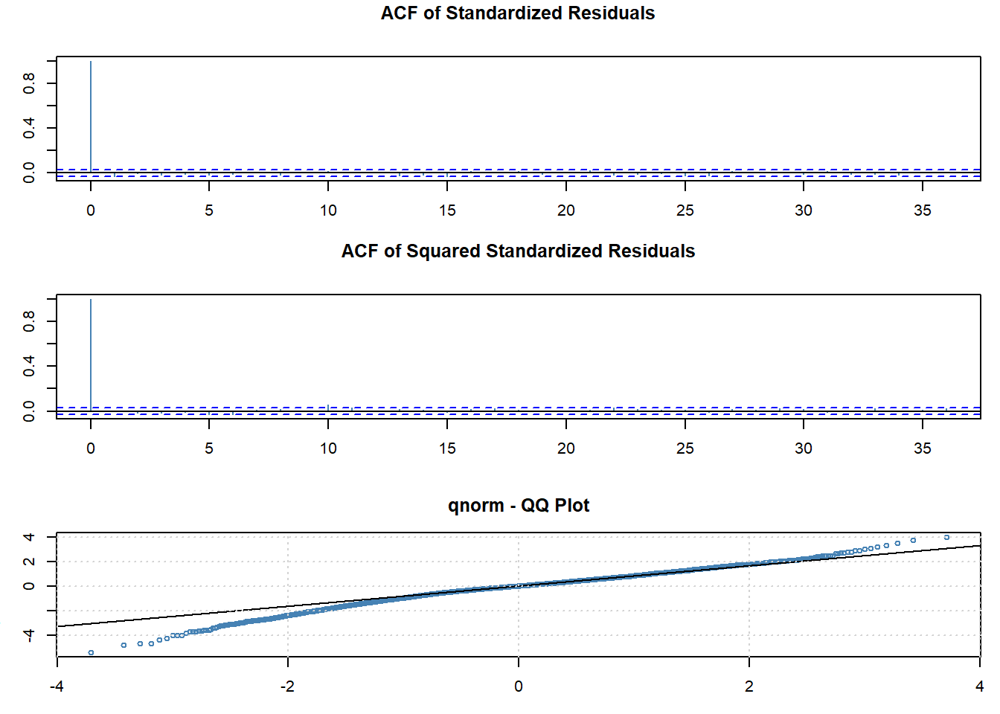
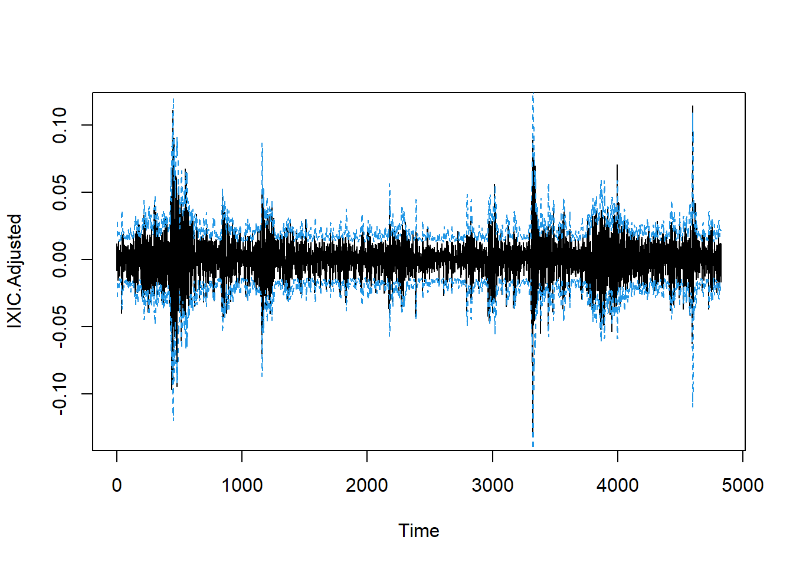
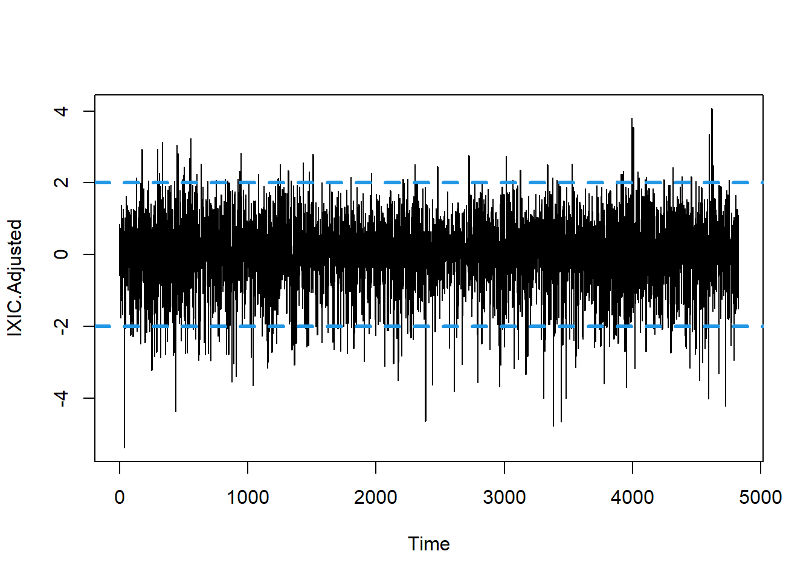
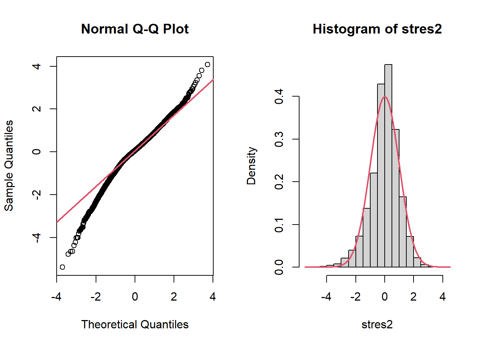
IXIC.Adjusted
nobs 4823.000000
NAs 0.000000
Minimum -5.391746
Maximum 4.071546
1. Quartile -0.512318
3. Quartile 0.612666
Mean -0.003869
Median 0.057661
Sum -18.658128
SE Mean 0.014384
LCL Mean -0.032069
UCL Mean 0.024332
Variance 0.997941
Stdev 0.998970
Skewness -0.533305
Kurtosis 1.349415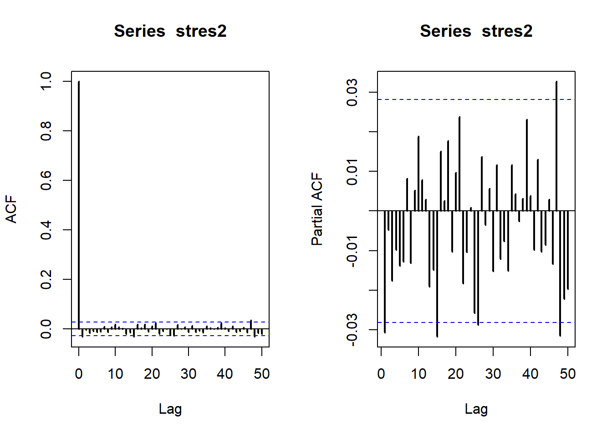
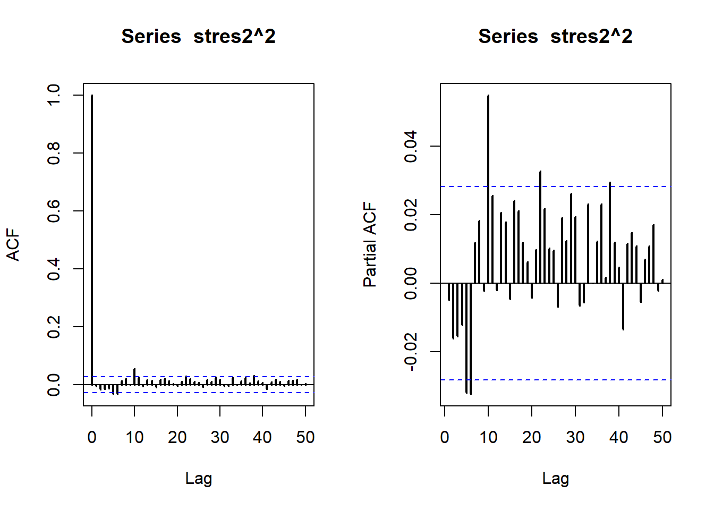
GARCH(1,1)
Series Initialization:
ARMA Model: arma
Formula Mean: ~ arma(0, 0)
GARCH Model: garch
Formula Variance: ~ garch(1, 1)
ARMA Order: 0 0
Max ARMA Order: 0
GARCH Order: 1 1
Max GARCH Order: 1
Maximum Order: 1
Conditional Dist: norm
h.start: 2
llh.start: 1
Length of Series: 4823
Recursion Init: mci
Series Scale: 0.0141077
Parameter Initialization:
Initial Parameters: $params
Limits of Transformations: $U, $V
Which Parameters are Fixed? $includes
Parameter Matrix:
U V params includes
mu -0.32677713 0.3267771 0.03267771 TRUE
omega 0.00000100 100.0000000 0.10000000 TRUE
alpha1 0.00000001 1.0000000 0.10000000 TRUE
gamma1 -0.99999999 1.0000000 0.10000000 FALSE
beta1 0.00000001 1.0000000 0.80000000 TRUE
delta 0.00000000 2.0000000 2.00000000 FALSE
skew 0.10000000 10.0000000 1.00000000 FALSE
shape 1.00000000 10.0000000 4.00000000 FALSE
Index List of Parameters to be Optimized:
mu omega alpha1 beta1
1 2 3 5
Persistence: 0.9
--- START OF TRACE ---
Selected Algorithm: nlminb
R coded nlminb Solver:
0: 6069.7724: 0.0326777 0.100000 0.100000 0.800000
1: 5992.3915: 0.0326790 0.0752492 0.0990719 0.787611
2: 5895.5495: 0.0326886 0.0306405 0.162845 0.810378
3: 5895.2464: 0.0326901 0.0294305 0.161958 0.810840
4: 5894.9566: 0.0326918 0.0300430 0.161571 0.812232
5: 5894.6754: 0.0326934 0.0288925 0.160621 0.812718
6: 5894.4098: 0.0326950 0.0296046 0.160235 0.814062
7: 5894.1498: 0.0326966 0.0284337 0.159265 0.814449
8: 5893.8838: 0.0326983 0.0291692 0.158880 0.815781
9: 5893.6195: 0.0327001 0.0280292 0.157892 0.816212
10: 5893.3512: 0.0327020 0.0287188 0.157464 0.817555
11: 5893.0849: 0.0327040 0.0276140 0.156460 0.818037
12: 5892.8161: 0.0327062 0.0282582 0.155994 0.819389
13: 5892.5496: 0.0327084 0.0271874 0.154978 0.819921
14: 5892.2822: 0.0327110 0.0277866 0.154479 0.821281
15: 5892.0177: 0.0327136 0.0267480 0.153456 0.821859
16: 5891.7537: 0.0327166 0.0273030 0.152930 0.823227
17: 5891.4934: 0.0327199 0.0262940 0.151905 0.823849
18: 5891.2351: 0.0327236 0.0268058 0.151358 0.825224
19: 5890.9815: 0.0327277 0.0258227 0.150337 0.825887
20: 5890.7316: 0.0327326 0.0262932 0.149778 0.827269
21: 5890.4879: 0.0327382 0.0253310 0.148768 0.827968
22: 5890.2500: 0.0327451 0.0257643 0.148210 0.829354
23: 5890.0203: 0.0327535 0.0248179 0.147220 0.830077
24: 5889.7995: 0.0327647 0.0252248 0.146679 0.831452
25: 5889.5895: 0.0327793 0.0243004 0.145724 0.832159
26: 5889.3923: 0.0327996 0.0247209 0.145220 0.833441
27: 5889.2068: 0.0328262 0.0238893 0.144309 0.833974
28: 5889.0333: 0.0328588 0.0244147 0.143831 0.834956
29: 5888.8670: 0.0328936 0.0237224 0.142955 0.835251
30: 5888.7080: 0.0329295 0.0242484 0.142500 0.836131
31: 5888.5531: 0.0329653 0.0235618 0.141679 0.836474
32: 5888.4054: 0.0330022 0.0240372 0.141248 0.837357
33: 5888.2626: 0.0330400 0.0233885 0.140468 0.837672
34: 5888.1269: 0.0330789 0.0238572 0.140059 0.838482
35: 5887.9952: 0.0331184 0.0232434 0.139321 0.838772
36: 5887.8696: 0.0331586 0.0236832 0.138934 0.839553
37: 5887.7478: 0.0331993 0.0230962 0.138235 0.839834
38: 5887.6319: 0.0332408 0.0235186 0.137869 0.840570
39: 5887.5195: 0.0332827 0.0229629 0.137206 0.840830
40: 5887.4122: 0.0333252 0.0233646 0.136860 0.841531
41: 5887.3081: 0.0333682 0.0228340 0.136231 0.841780
42: 5887.2089: 0.0334116 0.0232173 0.135904 0.842445
43: 5887.1125: 0.0334555 0.0227136 0.135308 0.842678
44: 5887.0206: 0.0334998 0.0230792 0.134998 0.843310
45: 5886.9312: 0.0335444 0.0225987 0.134433 0.843532
46: 5886.8459: 0.0335894 0.0229474 0.134139 0.844133
47: 5886.7630: 0.0336347 0.0224903 0.133603 0.844342
48: 5886.6838: 0.0336804 0.0228232 0.133325 0.844913
49: 5886.6068: 0.0337263 0.0223872 0.132816 0.845112
50: 5886.5330: 0.0337725 0.0227048 0.132553 0.845655
51: 5886.4614: 0.0338190 0.0222896 0.132069 0.845842
52: 5886.3927: 0.0338657 0.0225930 0.131821 0.846359
53: 5886.3260: 0.0339127 0.0221968 0.131361 0.846536
54: 5886.2619: 0.0339599 0.0224865 0.131126 0.847029
55: 5886.1997: 0.0340073 0.0221087 0.130688 0.847196
56: 5886.1398: 0.0340548 0.0223856 0.130465 0.847665
57: 5886.0816: 0.0341026 0.0220250 0.130050 0.847824
58: 5886.0257: 0.0341505 0.0222896 0.129838 0.848270
59: 5885.9712: 0.0341986 0.0219454 0.129443 0.848420
60: 5885.9188: 0.0342469 0.0221985 0.129243 0.848846
61: 5885.8677: 0.0342953 0.0218697 0.128866 0.848988
62: 5885.8185: 0.0343438 0.0221118 0.128677 0.849393
63: 5885.7706: 0.0343925 0.0217978 0.128318 0.849528
64: 5885.7243: 0.0344413 0.0220292 0.128138 0.849915
65: 5885.6792: 0.0344902 0.0217291 0.127797 0.850043
66: 5885.6357: 0.0345393 0.0219509 0.127626 0.850411
67: 5885.5932: 0.0345884 0.0216641 0.127301 0.850532
68: 5885.5521: 0.0346377 0.0218761 0.127140 0.850884
69: 5885.5121: 0.0346870 0.0216018 0.126830 0.850999
70: 5885.4733: 0.0347364 0.0218053 0.126676 0.851334
71: 5885.4354: 0.0347860 0.0215428 0.126381 0.851443
72: 5885.3987: 0.0348356 0.0217375 0.126236 0.851763
73: 5885.3628: 0.0348852 0.0214865 0.125953 0.851866
74: 5885.3280: 0.0349350 0.0216734 0.125816 0.852171
75: 5885.2940: 0.0349848 0.0214329 0.125547 0.852269
76: 5885.2609: 0.0350347 0.0216119 0.125416 0.852561
77: 5885.2286: 0.0350847 0.0213820 0.125159 0.852653
78: 5885.1971: 0.0351347 0.0215538 0.125035 0.852932
79: 5885.1664: 0.0351848 0.0213330 0.124791 0.853020
80: 5885.1364: 0.0352349 0.0214981 0.124673 0.853286
81: 5885.1071: 0.0352851 0.0212871 0.124439 0.853368
82: 5885.0785: 0.0353353 0.0214451 0.124328 0.853623
83: 5885.0505: 0.0353856 0.0212423 0.124105 0.853702
84: 5885.0232: 0.0354359 0.0213951 0.123999 0.853944
85: 5884.9963: 0.0354863 0.0212008 0.123786 0.854018
86: 5884.9702: 0.0355367 0.0213462 0.123685 0.854252
87: 5884.9445: 0.0355872 0.0211603 0.123482 0.854322
88: 5884.9194: 0.0356377 0.0213018 0.123386 0.854542
89: 5884.8947: 0.0356882 0.0211218 0.123192 0.854611
90: 5884.8706: 0.0357387 0.0212565 0.123102 0.854824
91: 5884.8469: 0.0357893 0.0210869 0.122916 0.854883
92: 5884.8237: 0.0358400 0.0212162 0.122830 0.855087
93: 5884.8008: 0.0358906 0.0210488 0.122654 0.855151
94: 5884.7785: 0.0359413 0.0211775 0.122571 0.855339
95: 5884.7565: 0.0359920 0.0210206 0.122402 0.855392
96: 5884.7348: 0.0360427 0.0211344 0.122327 0.855590
97: 5884.7136: 0.0360935 0.0209853 0.122163 0.855637
98: 5884.6929: 0.0361443 0.0211101 0.122089 0.855798
99: 5884.6721: 0.0361950 0.0209514 0.121938 0.855873
100: 5884.6519: 0.0362458 0.0210620 0.121868 0.856047
101: 5884.6323: 0.0362968 0.0209446 0.121714 0.856047
102: 5884.6124: 0.0363475 0.0210324 0.121654 0.856247
103: 5884.5928: 0.0363983 0.0208727 0.121517 0.856337
104: 5884.5745: 0.0364492 0.0210369 0.121436 0.856380
105: 5884.5556: 0.0365001 0.0208918 0.121298 0.856444
106: 5884.5358: 0.0365502 0.0208942 0.121269 0.856779
107: 5884.5172: 0.0366009 0.0208629 0.121073 0.856660
108: 5884.5024: 0.0366517 0.0210667 0.121001 0.856682
109: 5884.4341: 0.0369387 0.0204477 0.121058 0.857776
110: 5884.3956: 0.0369432 0.0207270 0.119741 0.857458
111: 5884.3724: 0.0369436 0.0209328 0.119789 0.857599
112: 5884.3562: 0.0369506 0.0205619 0.119284 0.858267
113: 5884.3364: 0.0369806 0.0207387 0.119336 0.858366
114: 5883.3728: 0.0457525 0.0198977 0.127262 0.854407
115: 5881.8654: 0.0545280 0.0222787 0.123757 0.852822
116: 5881.3995: 0.0632936 0.0196565 0.114912 0.862722
117: 5881.2970: 0.0613821 0.0204795 0.116542 0.861291
118: 5881.2869: 0.0616094 0.0205831 0.117825 0.859693
119: 5881.2833: 0.0615582 0.0204381 0.117004 0.860619
120: 5881.2833: 0.0615652 0.0204516 0.117070 0.860563
121: 5881.2833: 0.0615633 0.0204514 0.117066 0.860564
Final Estimate of the Negative LLH:
LLH: -14669.69 norm LLH: -3.04161
mu omega alpha1 beta1
8.685169e-04 4.070384e-06 1.170665e-01 8.605638e-01
R-optimhess Difference Approximated Hessian Matrix:
mu omega alpha1 beta1
mu -49811914.157 7.139409e+08 34874.60 9.809988e+03
omega 713940898.807 -1.524325e+13 -855560977.80 -1.297753e+09
alpha1 34874.605 -8.555610e+08 -97806.49 -1.135107e+05
beta1 9809.988 -1.297753e+09 -113510.67 -1.526728e+05
attr(,"time")
Time difference of 0.05430484 secs
--- END OF TRACE ---
Time to Estimate Parameters:
Time difference of 0.7273002 secs
Title:
GARCH Modelling
Call:
garchFit(formula = ~garch(1, 1), data = returns)
Mean and Variance Equation:
data ~ garch(1, 1)
<environment: 0x0000028d82794580>
[data = returns]
Conditional Distribution:
norm
Coefficient(s):
mu omega alpha1 beta1
8.6852e-04 4.0704e-06 1.1707e-01 8.6056e-01
Std. Errors:
based on Hessian
Error Analysis:
Estimate Std. Error t value Pr(>|t|)
mu 8.685e-04 1.421e-04 6.113 9.80e-10 ***
omega 4.070e-06 5.499e-07 7.402 1.35e-13 ***
alpha1 1.171e-01 9.742e-03 12.017 < 2e-16 ***
beta1 8.606e-01 1.059e-02 81.267 < 2e-16 ***
---
Signif. codes: 0 '***' 0.001 '**' 0.01 '*' 0.05 '.' 0.1 ' ' 1
Log Likelihood:
14669.69 normalized: 3.04161
Description:
Mon Mar 9 01:29:49 2026 by user: T14
Standardised Residuals Tests:
Statistic p-Value
Jarque-Bera Test R Chi^2 708.0639163 0.00000000
Shapiro-Wilk Test R W 0.9787103 0.00000000
Ljung-Box Test R Q(10) 14.8767836 0.13661910
Ljung-Box Test R Q(15) 24.1031748 0.06336199
Ljung-Box Test R Q(20) 27.0755701 0.13315125
Ljung-Box Test R^2 Q(10) 15.3785995 0.11885633
Ljung-Box Test R^2 Q(15) 20.2432414 0.16279890
Ljung-Box Test R^2 Q(20) 23.5645623 0.26193033
LM Arch Test R TR^2 16.1624509 0.18390831
Information Criterion Statistics:
AIC BIC SIC HQIC
-6.081562 -6.076187 -6.081563 -6.079675 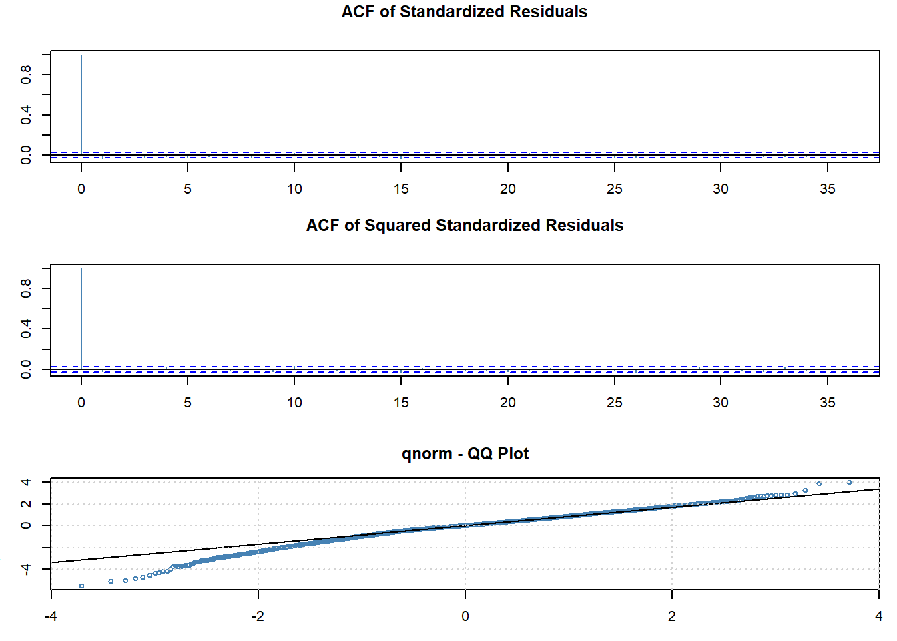
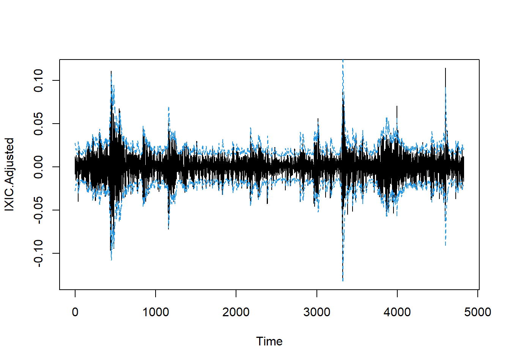
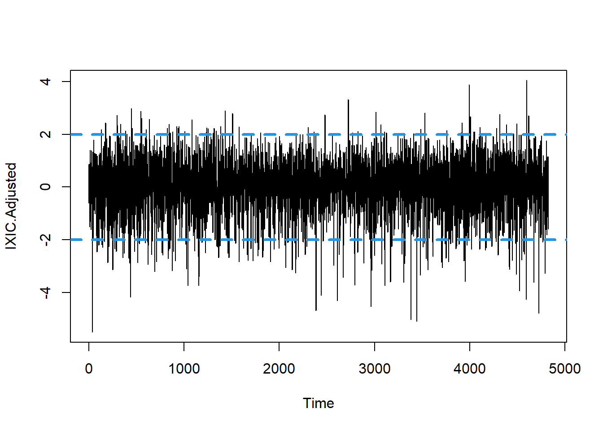
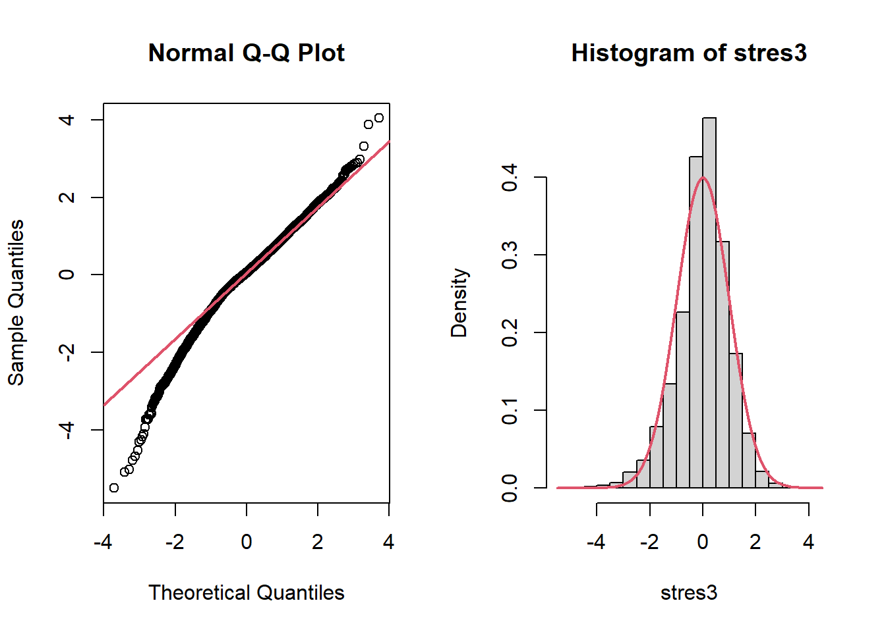
IXIC.Adjusted
nobs 4823.000000
NAs 0.000000
Minimum -5.494955
Maximum 4.039885
1. Quartile -0.521035
3. Quartile 0.626281
Mean -0.002205
Median 0.058223
Sum -10.636213
SE Mean 0.014379
LCL Mean -0.030396
UCL Mean 0.025985
Variance 0.997250
Stdev 0.998624
Skewness -0.580302
Kurtosis 1.463693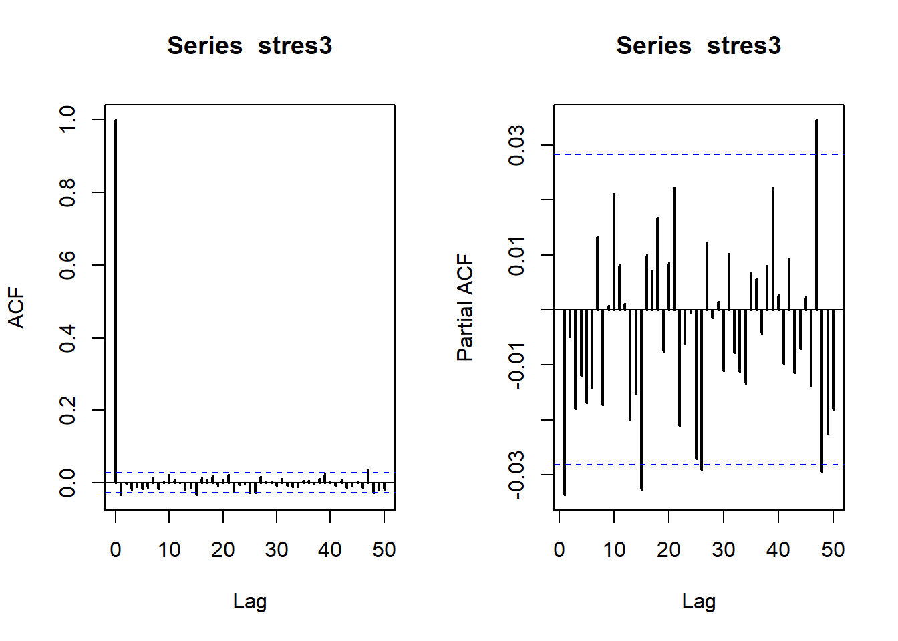
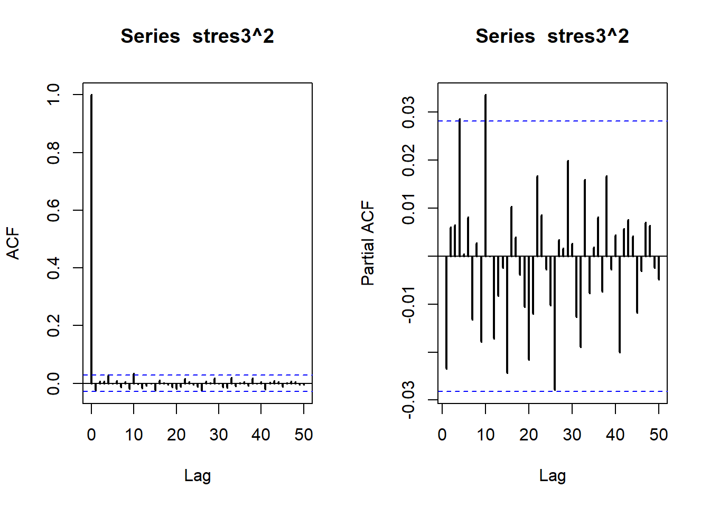